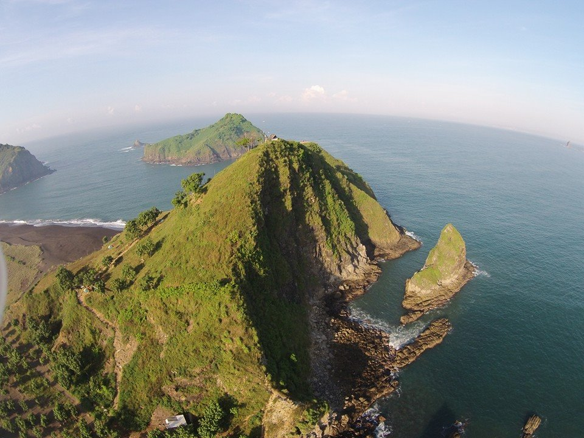

Jelajahi Jember, Nikmati Pesona Keindahannya
Ya, di Jember, setiap hari merupakan hari yang menakjubkan. Jember banyak menyimpan potongan surga kecil yang masih belum banyak diketahui khalayak luas. Tak ada yang seperti Jember. Jelajahi Jember, tempat dimana Anda pasti ingin selalu datang kembali dan tak pernah melupakan keindahannya.
Destinasi



Pantai Payangan
Inilah wisata yang di mana terdapat 4 pantai, 3 bukit, dan 1 pulau sekaligus
More Details >
Share

Rembangan
Bagi kalian yang ingin menikmati indahnya hamparan persawahan dibalut dengan indahnya pemandangan
More Details >
Share

Event
Pantai Payangan
Disini adalah ajang para designer untuk memamerkan busana mereka dalam Carnaval
More Details >
Share


 @Jember_Pariwisata
@Jember_Pariwisata